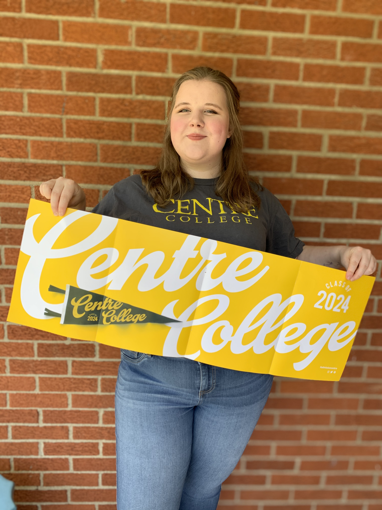

Who am I?
Hello! I am currently an undergraduate student at Centre College in Danville, Kentucky and a native daughter of Lexington, Kentucky. This website is a compilation of the coding and data analytics knowledge I continue to accumilate and the projects I have created along the way. I created my portfolio as a way to further develop my professional skills. Any feedback is deeply appreciated. Thank you!